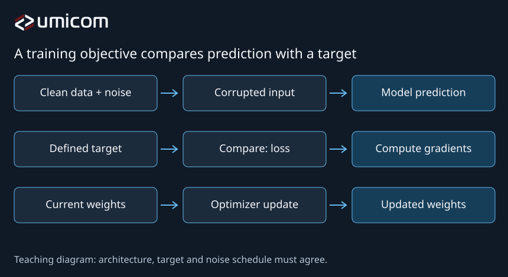

Understand a denoising objective before training
Noise is a controlled random disturbance added to data. In a diffusion-style training example, the system chooses a noise level, corrupts a clean representation, and trains a model to predict a defined target. Depending on the model and parameterization, that target may be noise, a clean sample or another related quantity. The scheduler and training code must agree.
A loss is a number measuring mismatch between prediction and target. For a tiny scalar example, squared error is (prediction − target)². A gradient tells how that error changes as a trainable parameter changes. An optimizer moves parameters according to a rule. This arithmetic illustrates learning; it is not an image generator.
Toy scalar model: prediction = weight × input
input = 2, target = 1, weight = 0
prediction = 0
loss = (0 - 1)^2 = 1
gradient with respect to weight = 2 × (prediction - target) × input = -4
learning rate = 0.1
new weight = 0 - 0.1 × (-4) = 0.4
new prediction = 0.8; new loss = 0.04- Recalculate every number with a pencil or calculator.
- Repeat with learning rate 1.0. The new weight becomes 4 and prediction 8, so loss becomes 49: a larger step can be worse.
- Explain which value is trainable and which is supplied by the dataset.
- Now imagine many parameters and tensor inputs. The same dependency idea scales, but the architecture, gradients, numeric stability and memory requirements become much more involved.
Training commonly samples a noise level for each example; inference repeatedly applies a learned denoising process under a scheduler. Training steps and inference denoising steps are not the same count. A fixed inference seed can aid comparison but does not guarantee identical outputs across implementations, hardware or versions.
Check
A decreasing loss on one scalar example is not evidence that a model understands images. Keep this toy objective separate from any claim of a native diffusion trainer. Framework’s existing training primitives and dataset services are building blocks that need architecture-specific implementation and qualification.
